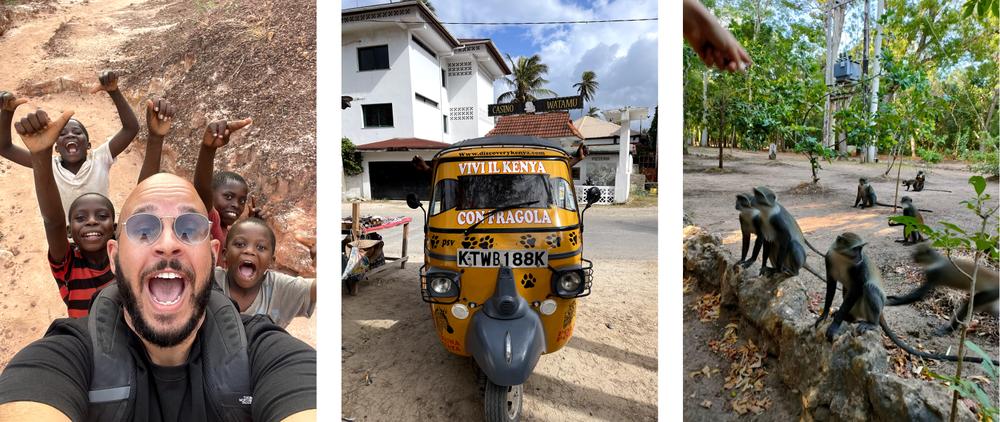
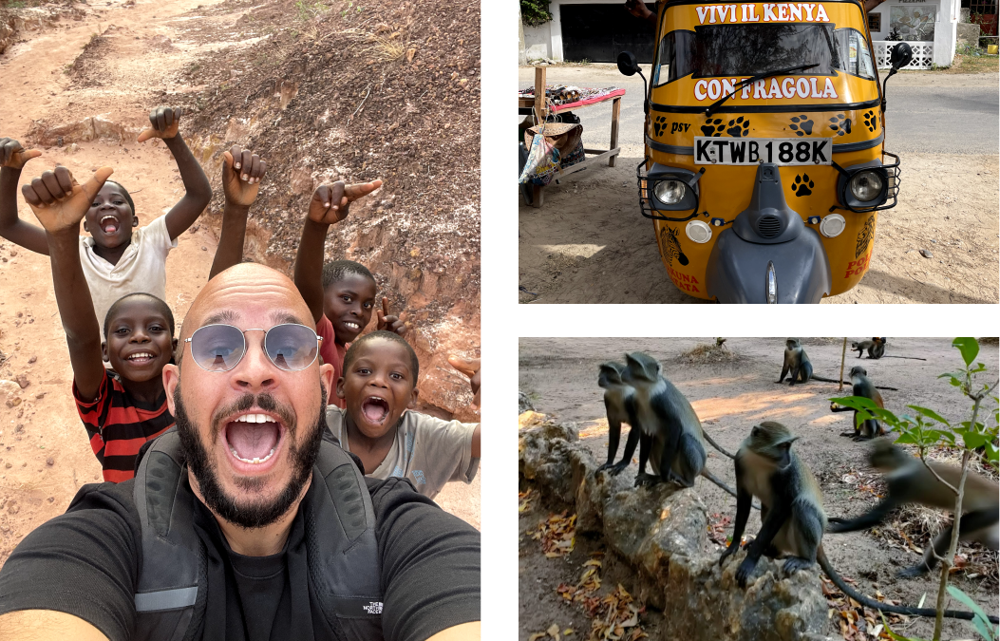
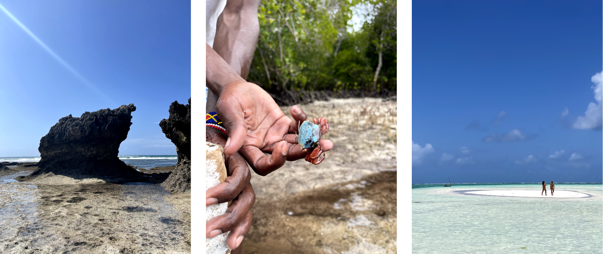
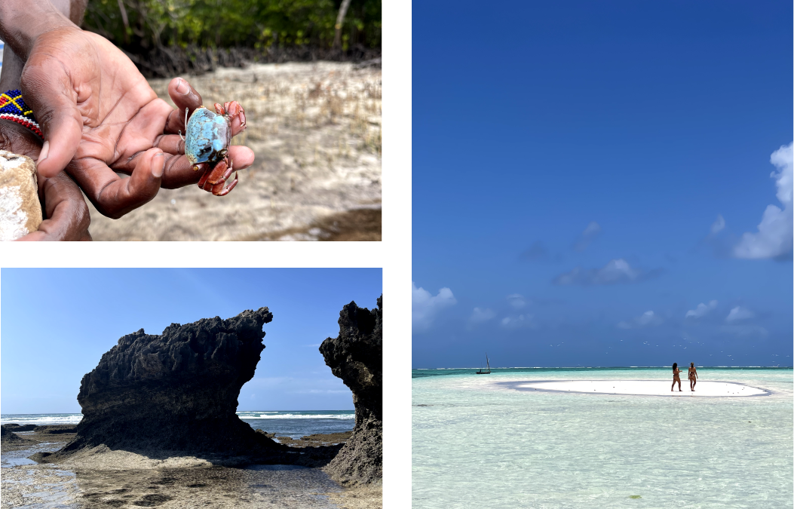
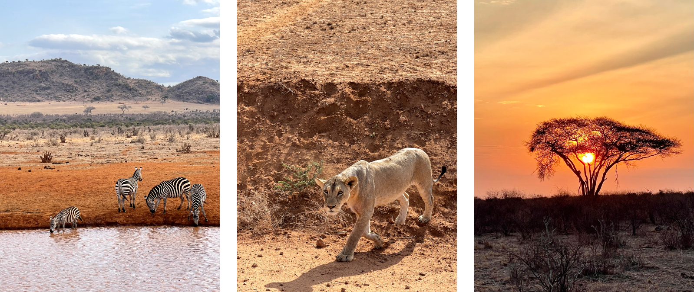
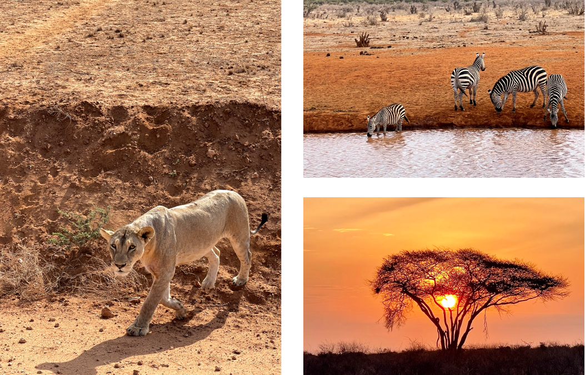

Viaggio in Africa, Kenya, Watamu tra mare, savana e cultura swaili, di Alessio Cardelli.
Safari, savana, mare, spiagge, swaili, canyon marafa, rovine di gede, garoda, jacaranda.
Se stai vedendo questi testi, vuol dire che i CSS non si sono caricati. Enjoy.
Kenya discovery: un viaggio a Watamu tra mare e savana.
Jambo jambo, karibuni! Ciao e benvenutə, tratoddo dallo swaili. L’Africa è quel posto in cui cultura, gentilezza, sapori, natura, mare, animali, inclusione e semplicità si incontrano. Hakuna matata.
 L’oceano indiano è un posto incredibile. L’alternarsi della marea, animali tropicali, spiagge bianchissime e acqua cristallina. Watamu, tra l’isola dell’amore, Garoda, Jacaranda e Mida creek.
 Safari in swaili significa viaggio. La savana è un posto magico e libero, dove la natura e gli animali convivono in armonia. Leoni, zebre, giraffe, leopardi, elefanti, bisonti. Asante sana! (grazie).
 